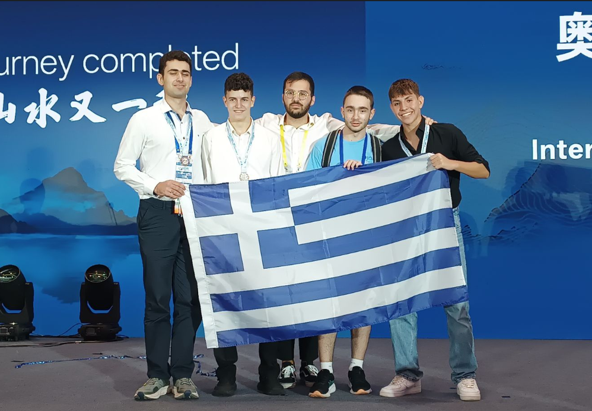
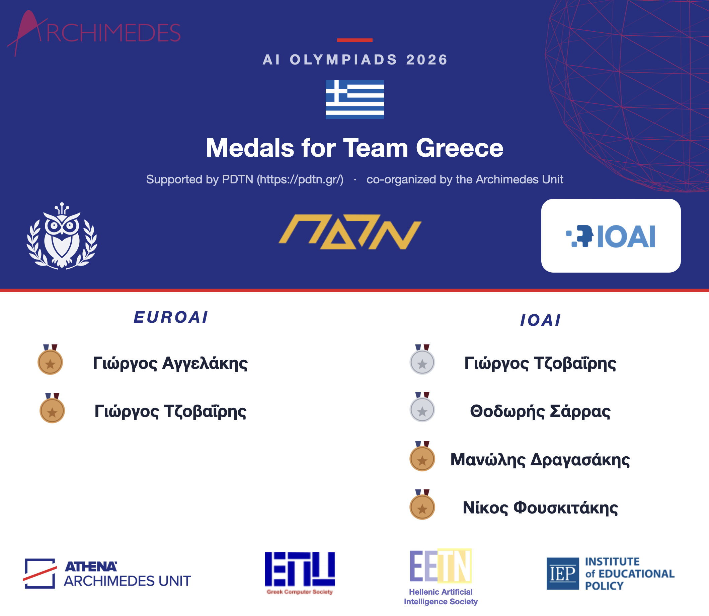

01 2026
MaxSketch: Robust Distinct Counting in Streams via Random Projections ↗
A compact random-projection sketch for counting distinct objects in noisy data streams, with provable memory guarantees.
I work on the foundations of machine learning, from provable algorithms and representation learning to efficient inference.
PhD researcher at the University of Athens and Archimedes, Athena Research Center.
Research with theoretical depth, built for real-world questions.
My work asks what learning algorithms can guarantee, and how those ideas can lead to better representations and more efficient models.
A compact random-projection sketch for counting distinct objects in noisy data streams, with provable memory guarantees.
A framework for understanding how useful structure emerges in neural networks, with applications beyond feature learning.
An optimization-based approach to learning distance-preserving embeddings by searching over random solution samplers.
Research shaped by collaboration across Athens, Cambridge, and Austin.
Worked with Constantinos Daskalakis during a three-month research visit.
Visited Constantine Caramanis and his lab.
University of Athens and Archimedes, Athena Research Center. Advised by Christos Tzamos and Constantine Caramanis.
I help lead and coach Team Greece for international AI Olympiads, connecting young talent with challenging problems and a global community.

Team leader for Greece at IOAI 2025. The students earned two silver medals and one bronze.
Official results ↗Photo: Archimedes Research Unit
Team Greece earned two bronze medals at EUROAI in Romania, then two silver and two bronze medals at IOAI in Kazakhstan.
Read the story ↗Graphic: Archimedes Research UnitAlongside the Olympiads, I co-founded Plateia AI, a nonprofit initiative promoting AI literacy and public engagement in Greece.
Explore the Greek AI Olympiad ↗I am a machine learning researcher interested in the bridge between mathematical guarantees and useful models.
My work spans representation learning, dimensionality reduction, optimization, and randomized methods. Recently, I have been exploring theory-inspired approaches to LLM compression and efficient inference.
Before my PhD, I studied mathematics at the University of Patras, statistics at Imperial College London, and statistics and operational research at Lancaster University.
A Python framework for evaluating LLMs on mathematical reasoning tasks, with answer verification and adaptive test-time compute experiments.
Explore on GitHub ↗Top Reviewer at NeurIPS 2026. Reviewer for NeurIPS, ICML, and ICLR. Invited speaker at the Archimedes Conference on AI and Algorithms.
I am seeking ML research and applied scientist internships. If my work is a fit for your team, I would love to hear from you.